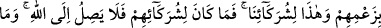
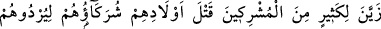
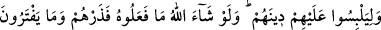
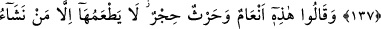
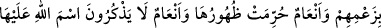
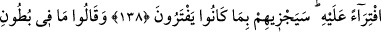
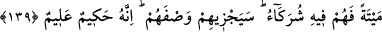
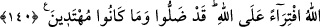

MÜŞRİKLERİN BÂZI
BÂTIL ÂDETLERİ
136. Allah’ın yarattığı ekinlerle hayvanlardan Allah’a pay ayırıp zanlarınca, bu
Allah’a, bu da ortaklarımıza (putlarımıza) dediler. Ortakları için ayrılan Allah’a
ulaşmıyor, fakat Allah için ayrılan ortaklarına ulaşıyor! Ne kötü hüküm veriyorlar?
137. Bunun gibi ortakları, müşriklerden çoğuna çocuklarını (kızlarını) öldürmeyi
hoş gösterdi ki, hem kendilerini mahvetsinler hem de dinlerini karıştırıp bozsunlar!
Allah dileseydi bunu yapamazlardı. Öyle ise onları uydurdukları ile başbaşa bırak!
138. Onlar saçma düşüncelerine göre dediler ki:”Bu (tanrılar için ayrılan)
hayvanlarla ekinler haramdır. Bunları bizim dilediğimizden başkası yiyemez. Bunlar
da binilmesi yasaklanmış hayvanlardır.” Birtakım hayvanlar da vardır ki, (Allah
böyle emrediyor diye) O’na iftira ederek üzerlerine Allah’ın adını anmazlar.
Yapmakta oldukları iftiraları yüzünden Allah onları cezalandıracaktır.
139. Dediler ki: “Şu hayvanların karınlarında olanlar yalnız erkeklerimize aittir,
kadınlarımıza ise haram kılınmıştır. Şayet (yavru) ölü doğarsa, o zaman (kadın
erkek) hepsi onda ortaktır.” Allah bu değerlendirmelerinin cezasını verecektir.
Şüphesiz ki O hikmet sahibidir, hakkıyla bilendir.
140. Bilgisizlikleri yüzünden beyinsizce çocuklarını öldürenler ve Allah’ın